Abstract
Biological experiment protocols are written in natural language, whereas automation systems rely on predefined control commands — a semantic gap that limits autonomous execution. Microplate experiments are especially challenging because well mapping, sample–reagent combinations, replicate placement, and parallel dispensing must all be controlled simultaneously.
We propose an agent-based protocol-translation framework that converts natural-language, microplate-based protocols into executable control commands for a robotic laboratory platform. A Parser Agent formalizes the protocol into a structured representation; a deterministic rule-based mapping engine then incorporates the operational constraints of the hardware to generate device-level commands. A heterogeneous LLM Validation Agent verifies completeness, parameter accuracy, and execution order, and triggers a structured-feedback self-correction loop when errors are detected.
A 7 Parser × 3 Validator sweep over randomly selected ELISA protocols quantifies how model scale and validator type affect translation accuracy and pass rates under cross-model verification, and a Bradford-assay protein quantification was demonstrated physically on the platform — validating end-to-end autonomy from natural-language protocol to real-world experiment.
Contributions
An agent system targeting microplate-based biology that takes natural-language protocols as input and generates coordinated, executable command sequences spanning plate transfer, liquid handling, and analytical-instrument control on a real robotic platform.
The LLM interprets free-text into a structured representation, while a deterministic rule-based engine enforces physical constraints (tip-usage, transfer paths, coordinate transforms) — structurally mitigating execution hallucination.
Separating the generator from the verifier blocks self-verification bias. The Validation Agent checks completeness, parameter consistency, and step order, feeding structured errors back for automatic regeneration.
Microplate liquid handling and a Bradford total-protein quantification assay were executed on KIMM BioForge-1, shifting the researcher's role from script-writing to experimental design and supervision.
Method
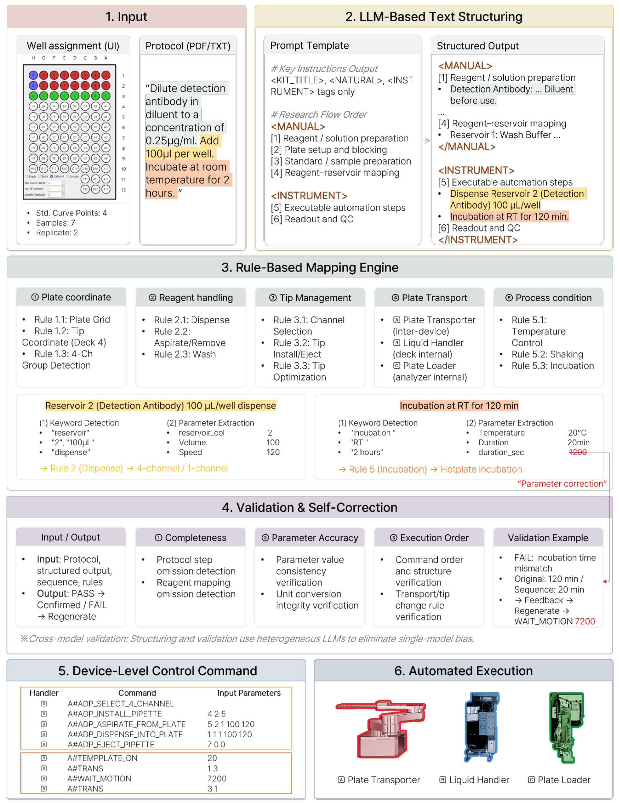
Fig. 1. The integrated pipeline: (1) natural-language protocol and microplate layout as input, (2) LLM-based structuring, (3) rule-based mapping into device-level commands, (4) cross-model validation with a feedback-based self-correction loop (≤3 iterations), (5) the verified command sequence, and (6) automated execution on the robotic platform.
<MANUAL>) from
instrument-executed (<INSTRUMENT>) steps.Hardware
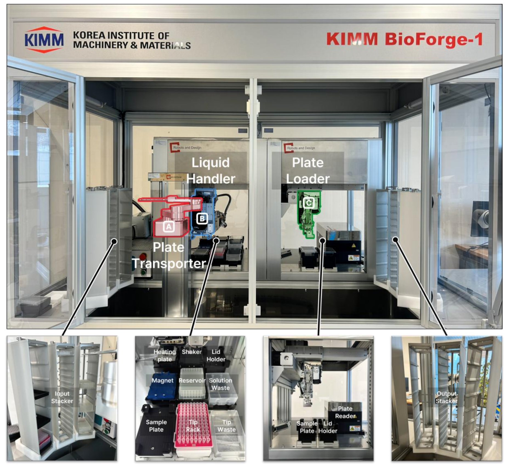
Fig. 2. The customized robotic laboratory platform integrates three core modules — a Plate Transporter (SCARA robot), a Liquid Handler (gantry robot with gripper), and a Plate Loader — across a nine-slot Main Deck and an Analyzer Deck housing the microplate reader. All operations are issued through a standardized command structure (module · operation · parameters), which is the translation target of the framework.
Inside the pipeline
A constrained-interpretation prompt normalizes diverse protocol styles into a consistent
tagged schema (<KIT_TITLE>, <MANUAL>,
<INSTRUMENT>). Extraction is restricted to information present in the input,
reducing fabrication and preserving step order. The human–instrument task boundary, usually
intermixed in prose, is made explicit so that downstream mapping operates only on
instrument-executable steps.
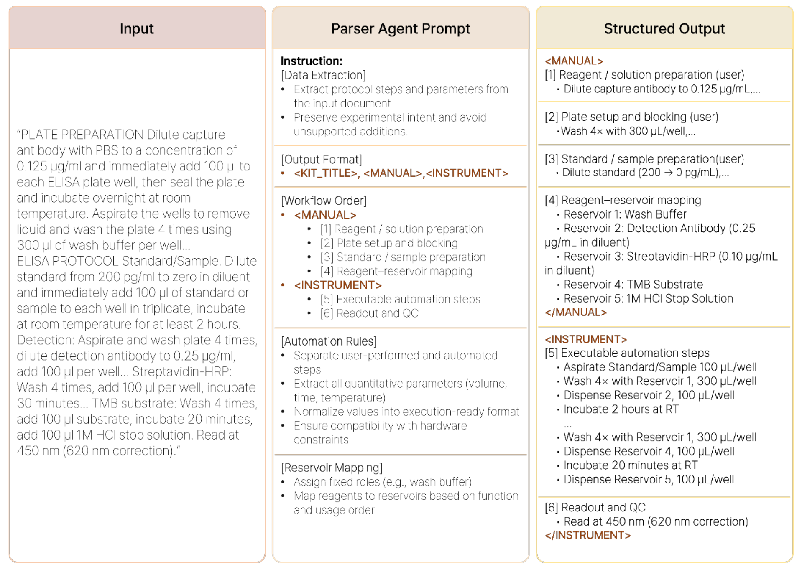
Fig. 3. The Parser Agent applies a constrained interpretation prompt to
convert an unstructured protocol into a tagged structured output, separating user-performed
(MANUAL) from instrument-executed (INSTRUMENT) steps.
The engine maps the structured protocol onto the platform's command system using predefined rules: coordinate-system mapping (the plate as an (x, y) grid with user-defined well roles), 4-channel grouping for multi-well dispensing, and rule sets for liquid handling, tip management, plate transport, and environmental control. Because the layer is deterministic, it introduces virtually no additional error when the input is accurate — so essentially all residual error originates at the Parser's structuring stage.
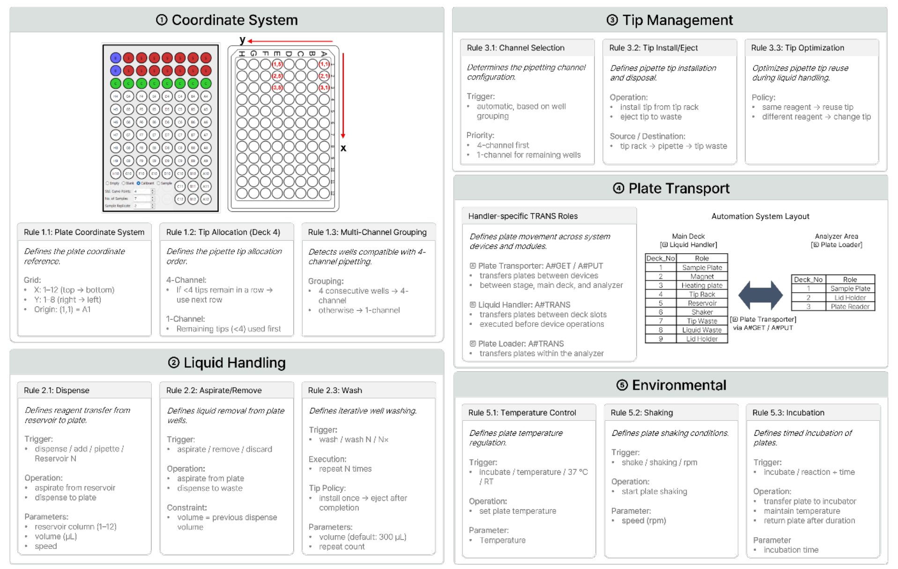
Fig. 4. The rule-based command-mapping engine — coordinate mapping, liquid handling, tip management, plate transport, and environmental control — converts structured steps into device-level commands while enforcing the platform's physical constraints.
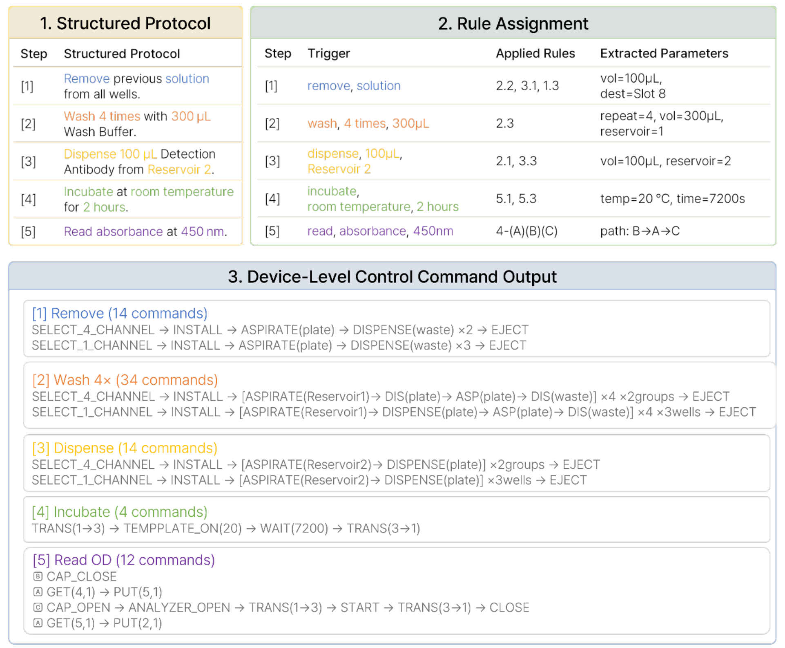
Fig. 5. The three-stage conversion Structured Protocol → Rule Assignment → Equipment Command Output. A single semantic step decomposes into a trigger keyword, an assigned rule, extracted parameters, and finally a block of device-level commands — revealing that one step can expand into a few to several dozen commands.
The original protocol, the structured protocol, and the command sequence are all provided to a verifier from a different model family than the Parser. Verification spans completeness (no missing steps), parameter accuracy (e.g. "2 hours" → the correct instrument unit), and execution order (liquid handling after tip attachment, rational plate movement, consistent tip-replacement policy). Detected errors become structured feedback — type, location, and correction guidance — that drives regeneration until all criteria pass.
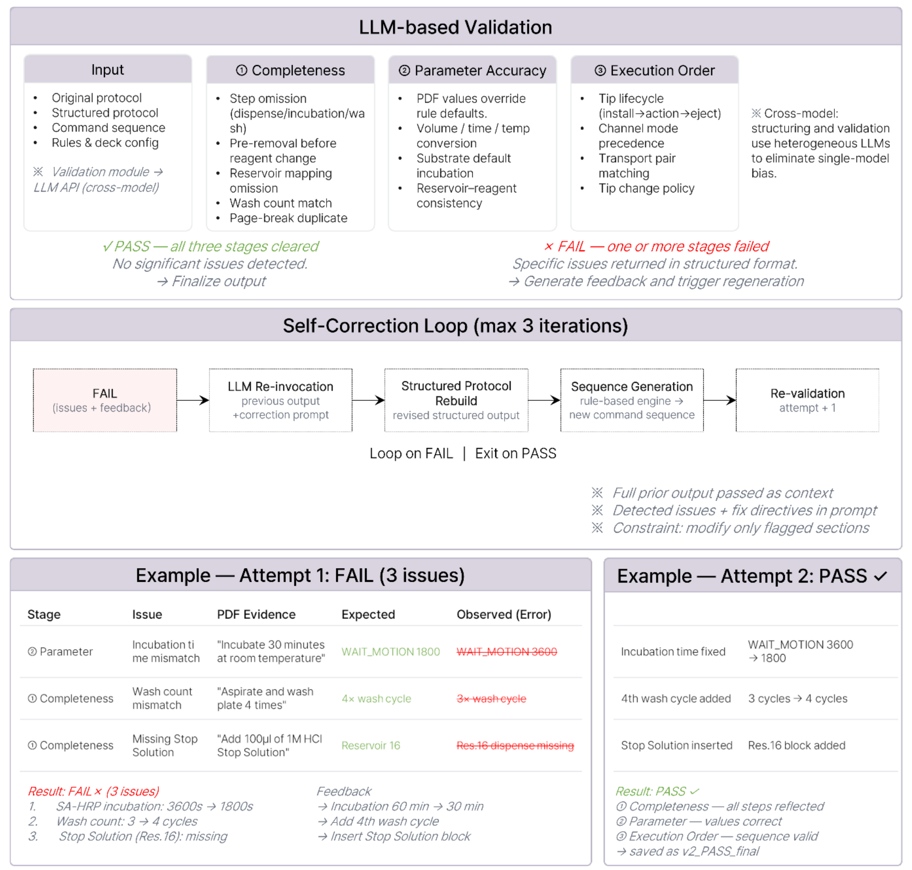
Fig. 6. The Validation Agent and self-correction loop with a worked example: attempt 1 fails with three issues (completeness, parameter accuracy, execution order); structured feedback drives regeneration, and attempt 2 passes.
Experimental setup
Seven models spanning a broad range of scale and hosting served as Parser Agents; three models served as Validation Agents, with Claude Sonnet 4.6 as the default external verifier ensuring generator–verifier heterogeneity. Evaluation drew on 1,000 ELISA protocols collected from the web, from which 30 stylistically diverse protocols were selected; two layers of ground truth (structured-protocol GT and device-command GT) were built by multiple expert reviewers with consensus adjudication. All LLM calls used identical prompt templates and call parameters (temperature, top-p, max tokens, seed) for reproducibility.
| Model | Role | Provider | Hosting | Version / snapshot | Release |
|---|---|---|---|---|---|
| GPT-5 | Parser · Validator | OpenAI | Cloud API | gpt-5-2025-08-07 | 2025-08-07 |
| GPT-4.1 | Parser | OpenAI | Cloud API | gpt-4.1-2025-04-14 | 2025-04-14 |
| o4-mini | Parser | OpenAI | Cloud API | o4-mini-2025-04-16 | 2025-04-16 |
| GPT-4.1-mini | Parser | OpenAI | Cloud API | gpt-4.1-mini-2025-04-14 | 2025-04-14 |
| GPT-4.1-nano | Parser | OpenAI | Cloud API | gpt-4.1-nano-2025-04-14 | 2025-04-14 |
| llama-4-maverick | Parser · Validator | Meta | Local / open-weight | Llama-4-Maverick-17B-128E-Instruct | 2025-04-05 |
| llama-3.3-70b | Parser | Meta | Local / open-weight | Llama-3.3-70B-Instruct | 2024-12-06 |
| claude-sonnet-4-6 | Validator (default) | Anthropic | Cloud API | claude-sonnet-4-6 | 2026-02-17 |
Table 1. Large language models used as Parser and Validator agents (specifications as of 2026-05-22). Parameter Accuracy is a GT-normalized score that rewards exact parameter/row matches across the structured and command-sequence layers while penalizing over-generation; the Pass rate decomposes outcomes into 1st Pass, 2nd / 3rd Pass (Regenerated), and Final Fail.
Results & discussion
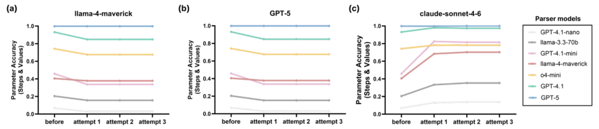
Fig. 7. Parameter accuracy across w/o regen → attempt 1 → 2 → 3 for seven Parsers under three Validators. Only claude-sonnet-4-6 (c) induces a sharp rise after attempt 1 — GPT-4.1-mini and llama-4-maverick climb from ~0.4 to 0.7–0.8 — whereas llama-4-maverick (a) and GPT-5 (b) validators pass too liberally and yield no gains.
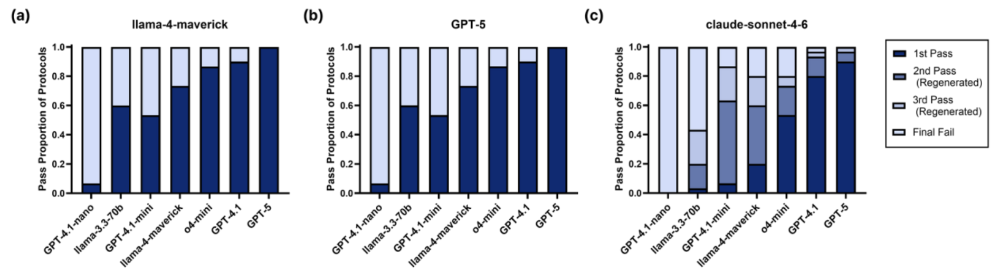
Fig. 8. Final pass-rate decomposition over 30 protocols. Under claude-sonnet-4-6 (c), protocols that fail at 1st Pass are recovered at the 2nd / 3rd Pass (Regenerated) stages — even GPT-4.1-nano reaches a cumulative pass rate of ~0.4 — while the regeneration stage effectively vanishes under the other two validators.
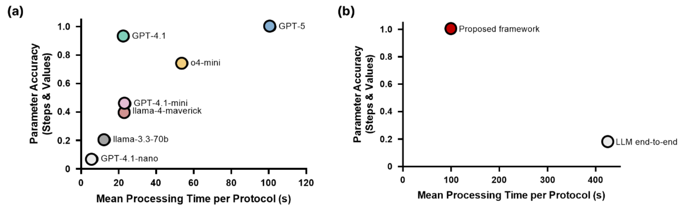
Fig. 9. (a) The accuracy–latency plane across Parser Agents: correction lifts the achievable frontier in the small-model region, since low latency is unchanged while effective accuracy rises. (b) The proposed hybrid framework attains both higher accuracy and shorter latency than LLM end-to-end direct mapping, confirming the value of the deterministic rule-based engine.
Demonstration
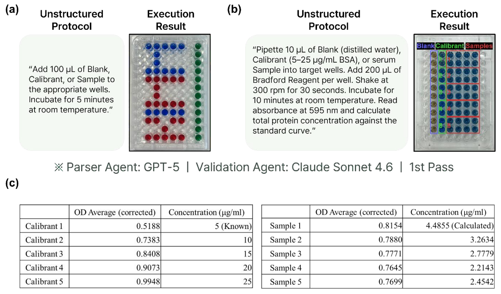
Fig. 10. End-to-end execution on BioForge-1 (Parser: GPT-5, Validator: Claude Sonnet 4.6; both passing on the 1st attempt). (a) A single-sentence dispensing protocol executed well-by-well. (b) A Bradford total-protein assay on fetal bovine serum, parsed through dispensing, shaking, incubation, and absorbance reading. (c) The five-point BSA standard curve (5–25 µg/mL, calibrated OD 0.5188→0.9948) and the measured FBS concentrations that distinguish the batches.
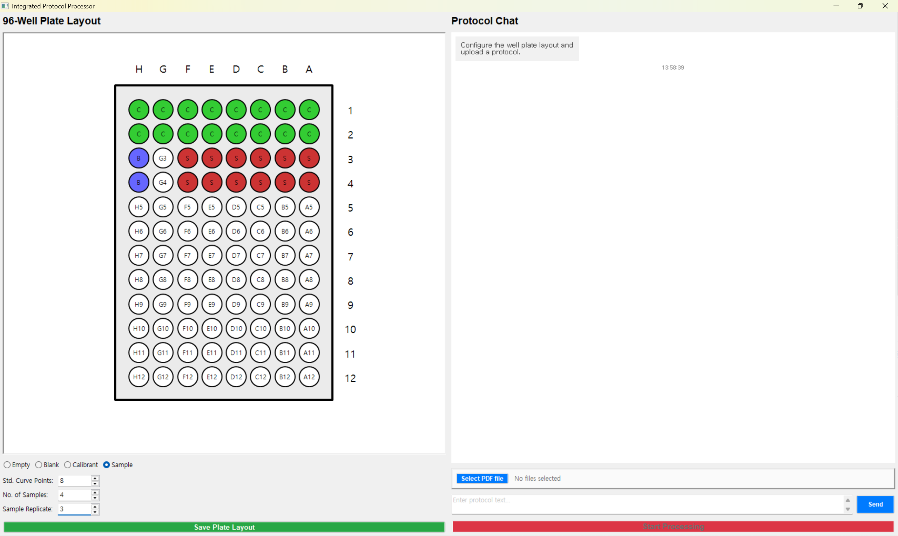
A chatbot-style interface accepts protocols by PDF upload or direct text and returns the structured result with the Validator's feedback, paired with a well-plate editor for user-defined allocation of standard-curve points, samples, and replicates.
Conference poster
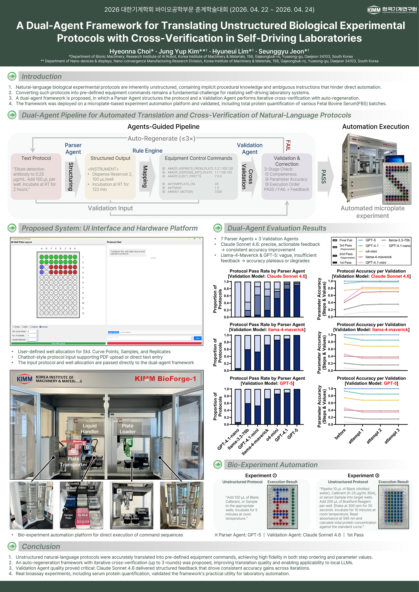
KSME Bio-Engineering Division Spring Conference 2026 — click to open the full high-resolution PDF.
Citation
@inproceedings{choi2026dualagent,
author = {Choi, Hyeonna and Kim, Jung Yup and Lim, Hyuneui and Jeon, Seunggyu},
title = {A Dual-Agent Framework for Translating Unstructured Biological
Experimental Protocols with Cross-Verification in Self-Driving Laboratories},
booktitle = {KSME Bio-Engineering Division Spring Conference},
year = {2026}
}Acknowledgements. This work was supported by the Technology Innovation Program (2410012121, Development of Automated, Intelligent and Continuous Integration System for Biofoundry) and the Technology Innovation Program (2410016531, Integrated verification system for autonomous laboratory on linker–payload complexes) funded by the Ministry of Trade, Industry & Energy (MOTIE, Korea).